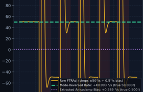
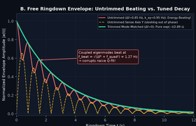
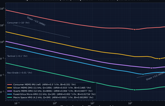
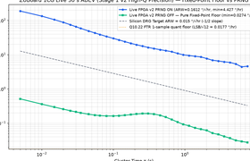

ZUBoard 1CG Study Notes
Interactive offline engineering explainers, physics labs & live silicon reports for Stage 1 CVG / DRG / HRG.

Gyro-Land Master Summary (Stage 0 & Stage 1 Sign-Off)
One-page executive summary of the entire ZUBoard 1CG gyro journey: system architecture SVG, live silicon KPIs, v1 → v2/v3 breakthroughs, bring-up bugs slayed, and live plots.

CVG Crash Course: 2D Resonator Physics, DX/DY/SX/SY & ADEV
Zero-jargon intuition for DRG/HRG wineglass standing waves (animated), strobe-light demodulation (DX, DY, SX, SY), the 4 loop forces, and how to read an ADEV bathtub & where bias lives.

64-Probe Cloverleaf Ring-Up & Fabrication Mode Pinning
Watch all 64 perimeter die ADC probes track an n=2 cloverleaf ringing up, wobbling, and locking onto the fab pinning angle θpin — plus Whole-Angle Adler dead-band and electrostatic un-pinning.

Gyro Ringdown, Semi-Log Q-Fit, 100 V ± 20 V Tuning & Bias Realism
Interactive DRG ringdown bench simulator (dial Vtune to kill beating, see Rician noise-floor Q-inflation & 100 V resistor Ohmic Q-loading) + g-sensitivity, quad setpoint error & dielectric charging.

Wait: PI, but no D?
Why demodulation turns a 2nd-order 11 kHz resonator into a 1st-order plant, live PI vs. PID noise blowup simulator, Feedforward rate/angle cancellation, and noise-gain Bode plot.

100+ °/s Quadrature & Gold Getter Vacuum Packages
Animated n=2 wineglass DRG with DC quad-trim & FPGA CLQ toggles, I/Q phase-leakage vs. anisodamping phasor diagram, and LCC NEG getter Q(P) vacuum curve.

Biggest Hurdles to Nav-Grade MEMS DRG Bias Stability (≤ 0.01 °/hr)
Why Silicon DRGs stall at ~0.2 °/hr (TED, quad phase leakage, anisodamping, package stress, 1/f & quantization) + interactive ADEV bathtub lab toggling Quartz, CLQ, Mode Reversal & Self-Thermometry.

Improving Silicon MEMS DRGs: Is Quartz the Only Way?
No! Interactive Zener TED Debye-peak explorer showing how lumped-mass <111> Silicon (12 μm, 3 kHz) reaches QTED=1.57M (τ≈80 s) & ≤0.01 °/hr without Quartz, plus Si vs. Quartz/SiC/Diamond.

More Resonator Contact Points & Sense vs. Drive Pin Trades
Why scaling 8 → 16 → 32 electrodes helps, why ~75% Sense / 25% Drive wins on high-Q DRGs (plus the DAC noise bonus), the Cpad saturation & X/Y softening traps, and an interactive DRG ring.

Differential Electrode Pairs (Push-Pull & 4-Quadrant Cancellation)
Why opposing +/− electrode pairs crush 2f0 distortion, vFTR² scale bow, and feedthrough — why 4-quadrant wiring kills n=1 shock, how DRIE gap mismatch (δ) sets CMRR, and current sim status.


Gyro ADEV Comparison (°/hr)
Overlapping Allan Deviation bathtub curves across Consumer MEMS, Silicon DRG (Q=100k), Quartz MEMS DRG (Q=800k), Micro-HRG (Q=1M), and Space HRG (Q=5M).

Live ZUBoard 1CG: Fixed-Point Rounding, High-Q v2 & +30 °C Thermal Ramp
Before/After live XCZU1CG measurements (40-bit NCO + Q10.22 PI + 24-bit ADC + Q-6.42): 100× lower ADEV floor (0.027 °/hr), 229 dB quad rejection, Space HRG bias resolved & 0.006 °C RMS self-thermometry.

Electrostatic Softening, Duffing Overdrive & Whole-Angle HRG Mode
DC mode-matching tuning curve (12.25 V), bent Duffing shark-fin bifurcation & thermometry pull, plus Lynch E/Q Whole-Angle Micro-HRG surviving a +500 / −300 °/s spin burst at 9.4 mdeg peak error.

KSZ9131RNX PHY & RGMII TXC 2 ns DLL Bypass
How JTAG forensics caught an unsupported PHY OUI (0x0022) in lwip220 and the asymmetric MMD2 0x4D TXC DLL bypass (0x16D1 → 0x06D1), with an interactive RGMII eye diagram.

A53 / R5F LPDDR4 Memory Collision & Fix
Visual Before/After memory map, interactive JTAG boot-crash timeline, and the exact Vitis lscript.ld partition + lwIP IRQ fix.